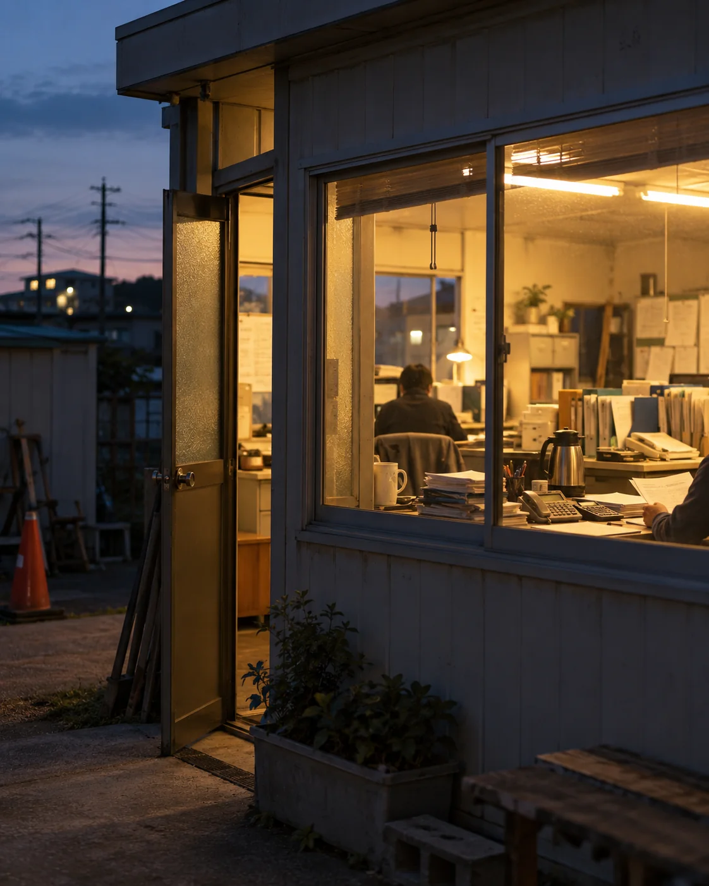

BACK OFFICE ENGINEERINGspinWorksバックオフィス丸投げ
優秀で、
求人を
PAIN
AIを使いたい。でも、形にする人がいない。
- 01
周りが
AIで 変わっていくのに、
うちだけ取り残されている 気が する。 - 02
情報は
追っている。 でも、
自社の仕事に どう落とせばいいか 分からない。 - 03
やりたい
ことは ある。 でも、
形にする 人も 時間も ない。 - 04
人を
増や したい。 でも、 求人を 出しても 人が 来ない。
- 知る新しい
ツールや AIの 情報を追う - 使い道を
決める 自社のどの 仕事に 使えるかを 決める - 毎日
使う 仕組みにして、 毎日 使えるように する
使い道を
新しい
BOTTLENECK
見積もりを出すのが1日遅れて、仕事を逃したことはありませんか。
問い- 問い
合わせ 返信が遅れて、 他社に 流れる - 見積もり作るのに
時間が かかり、 出すのが 遅れる - 受注・手配段取りが
電話と メモで、 行き違いが 起きる - 現場・記録同じ
数字を 何度も 書き写す - 請求・
入金 請求漏れ・確認の手間
気づかないうちに起きている取りこぼし
返信や
人を増やす前に、仕事を見直す
仕事の
CONCEPT
今月の事務は、 私たちがやる。
来月からは、仕組みがやる。
これまでの
- 書類を
毎月 同じ 手順で 作る - くり返しの
作業も 人が やる - やり方は
担当の 方しか 知らない
spinWorksの
- 書類を
作りながら、 作り方を 仕組みに する - くり返しの
作業は、 システムと AIに 任せる - やり方が
会社に 残る
同じ
FOR EXAMPLE
たとえば、建設・運送の会社の1日で見てみます。
出庫
配車表と
点呼の 段取り spinWorksの
事務員なら 配車表を、前日の うちに 1枚に まとめて おく 現場
台数と
品目の 記録 spinWorksの
事務員なら 話すだけで日報に 入るように しておく 受入場
受領書と
伝票の 控え spinWorksの
事務員なら 写真1枚で、伝票の 控えに 残す 
事務所
伝票・台帳・請求書
spinWorksの
事務員なら 締め日に、請求書の 下書きが そろっている
DEMO
仕組みの例：運行の内容を話すだけで日報ができ、締め日の夜には請求書が送られます。
ONE-STOP
ツール選びから開発、その後の運用まで、まとめてお任せください。
別々の- 01
最新の
情報を 追う 新しい
ツールや AIの 中から、 御社の 仕事に 本当に 使える ものを 選びます。 - ツール・AIの
比較と 選定 - 使える・
使えないの 見極め
- ツール・AIの
- 02
社内の
データを 整理する 紙・Excel・LINEに
散らばった 記録を、 保存場所も 書き方も 統一します。 - データの
保存場所の 整理 - 入力の
形の 統一
- データの
- 03
請求書などの
業務を 電子化する 日報から
伝票・台帳・請求書まで、 書き写さずに 作れるようにします。 - 請求書・伝票の
自動作成 - 日報の
入力の しかたの 見直し
- 請求書・伝票の
- 04
社内の
システムを 作る 既製品で
足りない 所は、 御社専用の 仕組みを 開発して 入れます。 - 社内ツールの
開発と 実装 - 入れた
後の 直しと 保守
- 社内ツールの
どこから
COMPARE
事務員を雇う場合・外注する場合との違い
| 事務員を | 作業ごとに | spinWorks | |
|---|---|---|---|
| 採用・教育の | 採用と | 都度の | 都度の |
| 最新の | 担当の | 頼んだ | こちらで |
| データの | 担当の | 作業ごとに | まとめて |
| やり方が | 担当の | 依頼先ごとに | 手順と |
FLOW
まずは、いちばん面倒な仕事を一つ教えてください。
お話を
伺う 今の
仕事の 流れと、 いちばん手間の かかっている 所を 伺います。 一つの
業務を 仕組みに する 効果の
大きい業務を 一つ 選び、 仕組みに して 動かします。 任せる
範囲を 広げる 使われている
ことを 確認してから、 ほかの 業務へ 広げます。 ツールや
会社の 変化に 合わせて、 直し続ける 使われ方を
見て、 合わなくなった 所を 直します。
FAQ
よくある質問
事務の作業そのものも頼めますか？
はい。
パソコンが苦手な社員が多くても大丈夫ですか？
はい。
一部の業務だけでも頼めますか？
はい。
会社の情報の扱いは大丈夫ですか？
始める
料金はいくらですか？
任せる
CONTACT